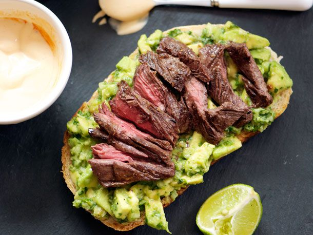

Avocado Roast Beef Sandiwch

Recipe Details
A hearty roast beef sandwich high in protein and healthy fats that gives you everything you need for a simple, high quality lunch!
Ingredients
- Your choice of bread. We reccommend a whole wheat variant with natural ingredients.
- Roast Beef
- Avocado
- Butter
- Greens
- Your choice of cheese. We reccommend provolone!
- Black Pepper and Paprika
- *optional* Special Sauce for flavor
Directions
- Cut the appropriate size of butter to place onto your skillet.
- Let the butter melt and place a piece of cheese onto each slice of bread.
- Place each slice of bread onto the skillet and allow it to cook for about 3 minutes.
- Use a spatula to check if the bread has reached the appropriate toastiness.
- Once you can tell your provolone has been melted to a level you like, apply the roast beef.
- Before flipping each side, add a bit of black pepper and paprika.
- Use your spatula to flip each piece of bread and cook for 1 one minute. The cheese should melt quicker.
- Remove your sandwich pieces from the skillet and apply greens to each side.
- Take half an avocado and put it on both sandiwch pieces. It's your choice if you want to mash the avocado. We find it's enjoyable both ways.
- Apply a layer of greens to each side of the sandwich.
- *optional* Apply a light amount of special sauce. We reccommend Trader Joes' magnifisauce.
- Put each sandwich side together and slice the sandiwch diagnally.
- Enjoy the masterpiece you just created!
Return to Main